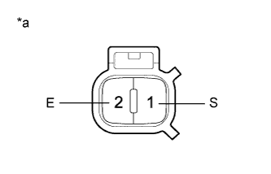

WASHER LEVEL WARNING SWITCH > INSPECTION |
| 1. INSPECT LEVEL WARNING SWITCH ASSEMBLY |
Fill the washer jar with washer fluid.
|  |
Measure the resistance according to the value(s) in the table below.
| Tester Connection | Condition | Specified Condition |
| 1 (S) - 2 (E) | Fluid volume is more than 830 cc (50.6 cu.in.) | 10 kΩ or higher |
| 1 (S) - 2 (E) | Fluid volume is less than 630 cc (38.4 cu.in.) | Below 1 Ω |
| *a | Component without harness connected (Level Warning Switch Assembly) |